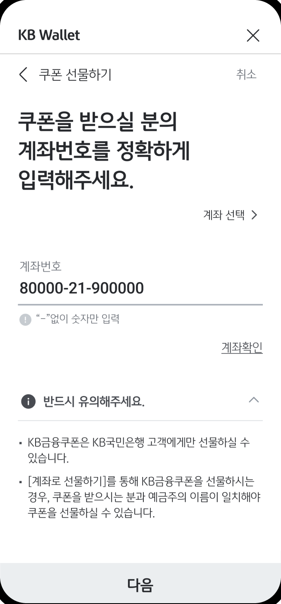

KB국민은행
비대면 마케팅
이벤트 및 프로모션의 제공은 즉시성, 지속성, 단순성, 인지성을 고려하여 UX/UI(GUI) 환경을 제공합니다. 고객의 니즈가 반영된 콘텐츠 큐레이션을 통해 긍정적인 경험과 이를 바탕한 지속적인 참여가 가능하도록 합니다.


Wallet
이벤트 및 프로모션의 제공은 즉시성, 지속성, 단순성, 인지성을 고려하여 UX/UI(GUI) 환경을 제공합니다. 고객의 니즈가 반영된 콘텐츠 큐레이션을 통해 긍정적인 경험과 이를 바탕한 지속적인 참여가 가능하도록 합니다.

